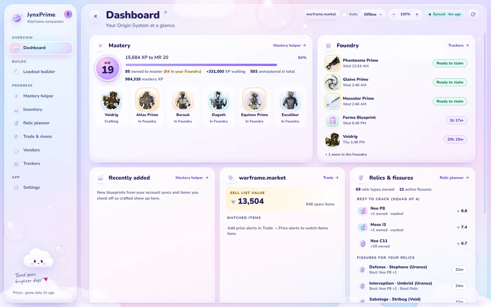

A Warframe companion for Windows
JynxPrime reads your inventory, prices it on warframe.market, and helps you decide what to farm, crack, sell or keep. While you play, small overlays show what relic rewards are worth and grade riven rolls.

What's in it
The pages in the app's sidebar, besides the dashboard above. The screenshots are from the app with a real account.
Overlays while you play
JynxPrime follows Warframe's log to know which screen you're on, reads that screen with text recognition that runs on your PC, and shows a small panel on top of the game.
The overlays need Warframe in Borderless or Windowed mode, with the game in English. If you use Legacy or Custom menu scale, set it in Settings › In-game overlays, or let the app detect it.
What's new
Build 2026.11.16.1101, released November 16, 2026
- JynxPrime now asks before it updates, then closes, installs the update and opens again by itself.
- There's a Windows installer now, JynxPrime-Setup.exe, on the website.
- New Trackers › Arbitrations tab with node tiers and alerts, and a Trackers › Crafting to-build list.
- New Riven Splicing overlay that tells you whether a splice is worth a Riven Splicer.
- Live sync works again on accounts where it failed with "'list' object has no attribute 'get'".
All changes
Installing and updating
- On the October version, this one update still arrives the old way: about 30 seconds after you open the app it downloads by itself ("A JynxPrime update was downloaded") and installs when you close the app. It won't open again by itself this time, so give it a few seconds and open JynxPrime yourself. From then on it asks before each update.
- Update JynxPrime? shows the new build and its download size, even while JynxPrime is still loading. Nothing downloads until you click Yes, update now, and then a progress bar shows the download. Click No and it asks again next start (or as soon as a newer build is out), and an Update available button stays in the top bar.
- The app checks as soon as it opens and then every hour (it used to be every 6 hours).
- Settings › About now also says whether you're up to date, with a Check for updates button, and an Update now button when there's an update. The sidebar footer shows your version too and says when an update is available. Click it to open Settings. The version is now 1.0.0.
- If JynxPrime is also open in another window, Update now asks you to close that one first. If an update still can't finish, your old version opens again and says why, and the next Update now doesn't download it again.
- A copy in a folder Windows won't let it change, like Program Files, can't update itself. Its prompt offers Open the download page instead.
- Downloads are now on the JynxPrime website. JynxPrime-Setup.exe (Windows 10 or 11, 64-bit) installs for your Windows user only, with no admin prompt. It adds a Start menu entry (a desktop shortcut is optional) and shows up in Windows Settings › Apps. The installed copy updates itself just like the zip. Windows may show a blue SmartScreen box when you run it: click More info, then Run anyway. Uninstalling keeps your account and settings. The zip is still there, now called JynxPrime.zip. If your zip copy already updates itself, you don't need the installer.
Main window
- The window has its own title bar in the app's light or dark theme. Drag it to move the window, or double-click it to maximize or restore. A maximized window has to be restored before you can drag it, and dragging to a screen edge no longer snaps it into place. On Windows 11 the corners are rounded.
- With Settings › General › Show a warning when trying to close the main app window on, closing asks "Do you really want to quit JynxPrime?" in the app's own style instead of a Windows message box.
In-game overlays
- Open Riven Splicing in game and pick a riven. Splice check rates the selected splice as Worth a Splicer, Maybe or Skip it. It shows what you lose and gain, the chance the extra random trait is one the weapon wants, and the riven's value before and after. Riven splicing lists every splice the riven allows, best first, and how many Riven Splicers you have (from your synced inventory; it shows ? when it can't tell). It's switched by the existing Settings › In-game overlays › Enable riven overlays.
- The relic rewards overlay no longer shows junk "Not recognised" cards if you were alt-tabbed when the reward screen opened. It waits until you're back in the game, and if it still can't read the cards it says so. If you used Ctrl+Tab on it, it now closes with the reward screen.
- The fissure relic picker keeps reading while it's open, so it narrows to the fissure's relic type instead of quietly listing every type. Until it can tell, a gold Fissure not read flag shows. Requiem fissures are recognised more reliably. The picker also still works if JynxPrime starts, or restarts for an update, while Warframe is already running.
- Overlays appear without fading in and disappear faster when you alt-tab. The riven overlays close about 0.3 seconds after you leave the screen, and no longer get stuck open.
Rivens
- Riven Disposition was retired in Hotfix 44.1.3, so every riven's stats are now worked out at the same 1.2 multiplier, in Trade & rivens › Rivens and the in-game overlays. Stats match the game's card again, and rivens that only showed stat names now show numbers. The disposition dots, the Disposition row, the overlays' disposition multiplier and the disposition remarks in What it's worth are gone.
- Price estimates convert warframe.market auctions listed before the change to the new numbers before comparing. Sell on warframe.market no longer refuses a riven because its weapon's disposition was missing.
Relics
- The Relic planner has a Requiem era button.
- Requiem Eterna relics you own now show up in the Relic planner, Inventory › Relics and the relic overlays.
- Requiem relics aren't marked Vaulted any more, so filtering to unvaulted relics doesn't hide them.
- Inventory › Relics search also finds relics by their rewards, like "Lohk".
- In the Relic planner, the Filters button gets a dot when filters in it are narrowing the list. An empty list says what's hiding relics and has a Clear search and filters button. If your relics can't load, it says why and offers Try again.
Trackers
- New Arbitrations tab: the current Arbitration and the schedule up to 7 days ahead, with each node's S to F tier from arbi.guide (or Unrated). It also shows what's coming up from your favourites and alert tiers, and the next S and A tier nodes. Search nodes, filter by mission type or tier, or show favourites only. The Daily & weekly tab's Arbitration now shows the node's tier too.
- Star (★) a node, or tick tiers under Also alert for, to get an alert before it starts while JynxPrime is running. It comes 10 minutes before by default, and you can change that under Alert, from when it starts to 1 hour before. Nothing is starred at first. Settings › Notifications › Arbitrations coming up turns these alerts off.
- New Crafting tab: add anything you build in the Foundry (a Warframe, weapon, part, Forma…), as many as you want. Each one shows whether it's ready to build, what you're still missing and where to get it, the credits it costs and its build time. It adds up the resources for your whole list and gives what you own to the entries at the top first, so move the one you want first to the top. It needs live sync or an imported inventory to know what you have.
Fixes
- Live sync no longer fails with "'list' object has no attribute 'get'" on some accounts, for example with MOA companions. Importing an inventory file had the same problem.
Download
Version 1.0.0, build 2026.11.16.1101. Free, no account needed.
Installs for your Windows user only, without admin rights. Adds JynxPrime to the Start menu and to Apps & Features, so it uninstalls cleanly.
Download installer (92 MB)No install. Extract the whole zip to a folder you can write to, like Documents\JynxPrime, then run JynxPrime.exe.
SHA-256 checksums
- JynxPrime-Setup.exe
- 9138b56043b0f5ccbaef4a8d28362e2e9569724e8e18edb0dadc3dcc3107cc2b
- JynxPrime.zip
- 020c2762dd25fe825c1fffbae17c21fc52579fd785f101631a91952b0b671537
Installing
- Run JynxPrime-Setup.exe. Windows may show a blue SmartScreen box because the app isn't from a big publisher: click More info, then Run anyway.
- Open JynxPrime from the Start menu. The first start downloads about 25 MB of game data, so give it a minute.
- It opens with a demo account so you can look around. Connect your own Warframe account in Settings › Account.
Requirements
- Windows 10 or 11, 64-bit
- It doesn't run on macOS, Linux or consoles.
- Microsoft Edge WebView2
- Built into Windows 11 and most Windows 10 PCs. If yours is missing it, JynxPrime tells you and opens Microsoft's download page.
- Warframe on the same PC
- Only for the overlays and trade tracking. Everything else works without the game running.
Questions
Is it safe to use with Warframe?
JynxPrime only reads: Warframe's log file, your screen (for the overlays) and public data like warframe.market prices. It never changes game files or sends keyboard or mouse input to the game.
The optional live sync reads the game's memory, read-only, to pick up inventory changes as they happen. No anti-cheat has approved it, so it's off by default, and turning it on is at your own risk.
Where does my data go?
It stays on your PC, in %APPDATA%\JynxPrime. There's no JynxPrime account or server. The overlays read the screen with text recognition that runs locally, so no screenshots are uploaded.
If you sign in to warframe.market, your password goes straight to warframe.market and only the session is kept, encrypted with your Windows account.
Windows says it protected my PC. What do I do?
That's SmartScreen, which warns about any download it hasn't seen from many people yet. Click More info, then Run anyway. You can compare the file with the SHA-256 checksum above if you want to be sure it's the real one.
How do I get a newer version?
New versions are posted in the Discord and on this page. Download the installer again and run it: it installs over the old version, and your account, builds and settings are kept.
How do I uninstall it?
Open Settings › Apps in Windows, find JynxPrime and click Uninstall. Your data in %APPDATA%\JynxPrime is left alone; delete that folder too if you want everything gone. For the portable zip, delete its folder.
Does it work on a Steam Deck, Mac or console?
No, only on Windows 10 and 11 PCs.
Is this made by Digital Extremes?
No. JynxPrime is an unofficial fan-made tool and isn't affiliated with or endorsed by Digital Extremes.
Discord
Questions, bug reports and ideas go here. New versions are announced in #announcements, with what changed.